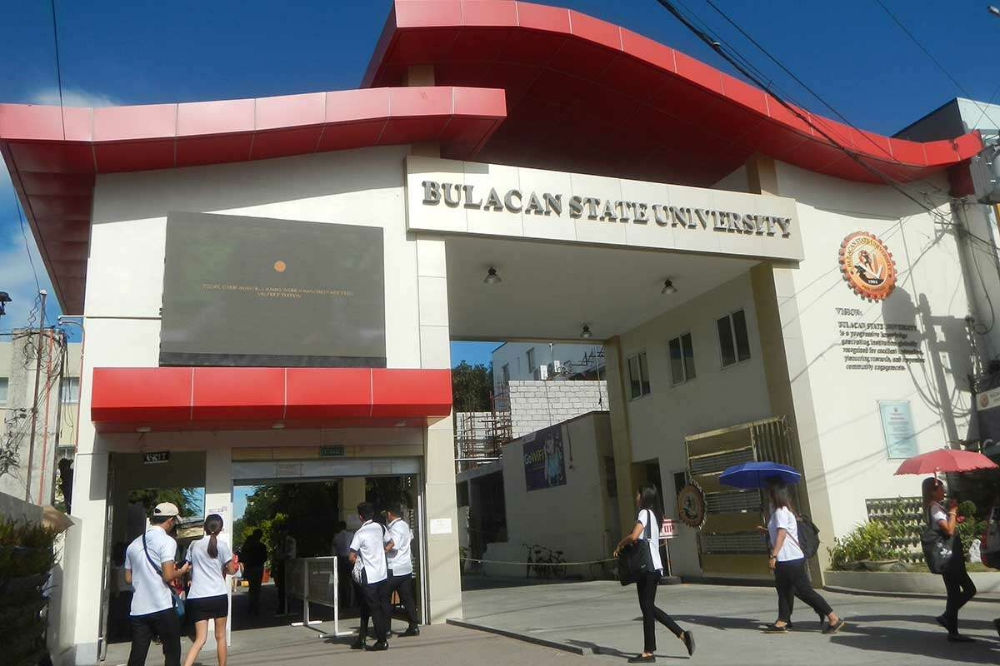

Education
College
Bulacan State University
Bachelor of Science in Information Systems (Undergraduate)
Currently enrolled
Senior High School

Senior High School – ICT Strand
Graduated
Hi! I’m passionate about web development and enjoy creating websites that are both functional and visually appealing. ,I have experience in hardware which has helped me build strong skills in web design and styling. Besides web development, I’m also interested in hardware and love learning how different computer parts work together. In my free time, I enjoy photo editing, which lets me express my creativity through images. I’m always eager to learn more and improve my skills in tech and design.
Bachelor of Science in Information Systems (Undergraduate)
Currently enrolled
Graduated